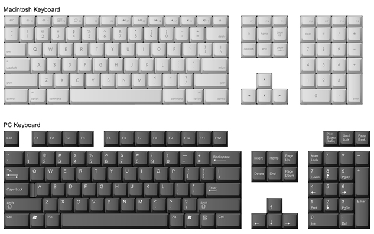
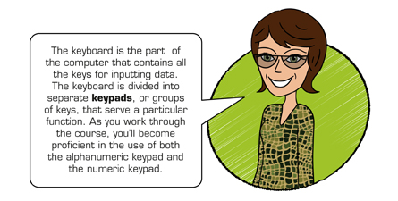

Computers have become necessities in many parts of people’s lives—at work, at school, and at home. People have computers in their offices, homes, and vehicles. They use many types of mobile devices, like laptops, BlackBerry products, and other PDA devices while on the go. Businesspeople often carry a computer with them to meetings and to do work while travelling. Farmers use computers to keep track of farming activities and to maintain their accounting systems. Students use computers to access information on the Internet for school assignments, complete online coursework, and keep in touch with friends. People use spreadsheets or accounting software to manage their finances. Businesses use computers for a multitude of purposes.
keyboarding: a term synonymous with touch typing
touch typing: typing without having to look at the keys
QWERTY: a keyboard having the standard arrangement of keys on the alphanumeric keypad; the first six letters in the third row
The efficient use of a computer involves knowing the functions of the computer and the software package you are using as well as knowing the keyboard—knowing how to type without looking at the keys. Keyboarding, also known as touch typing, reduces inputting time while decreasing the stress involved in computer use. Touch typing also reduces physical stress on the body while inputting data.
Each level of Keyboarding will teach you how to type on the QWERTY (standard) keyboard using alpha (alphabet), numeric (numbers), and symbol keys as well as the numeric keypad.

